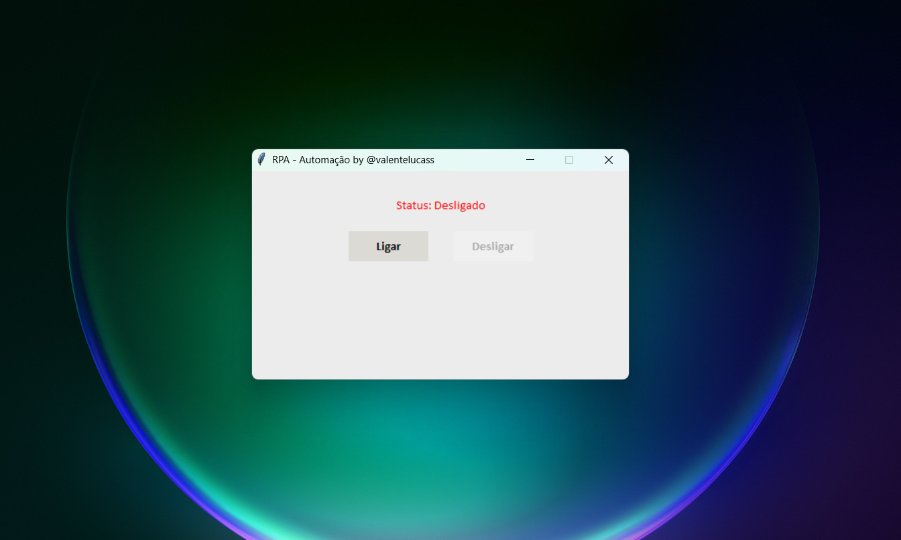
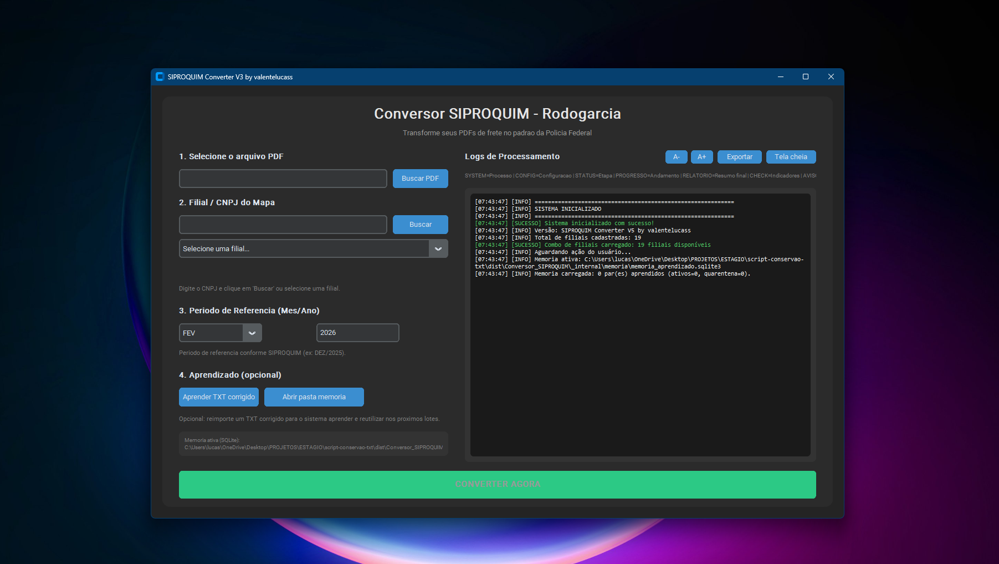
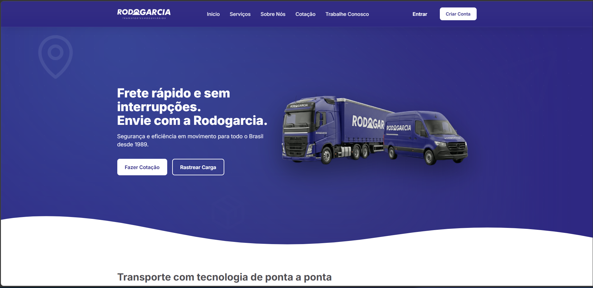
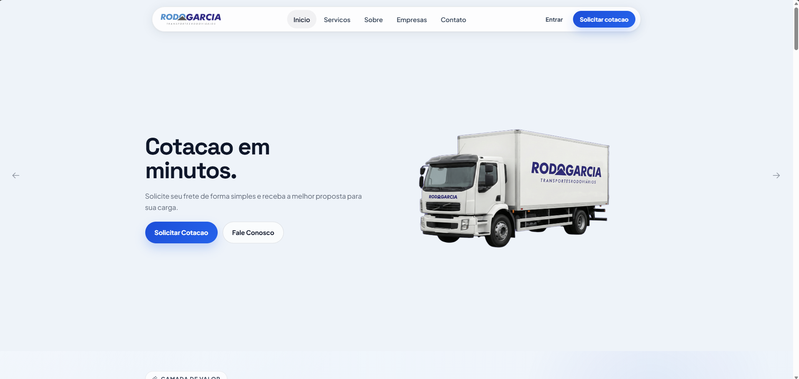
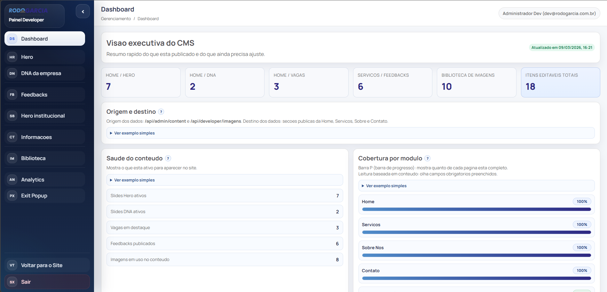
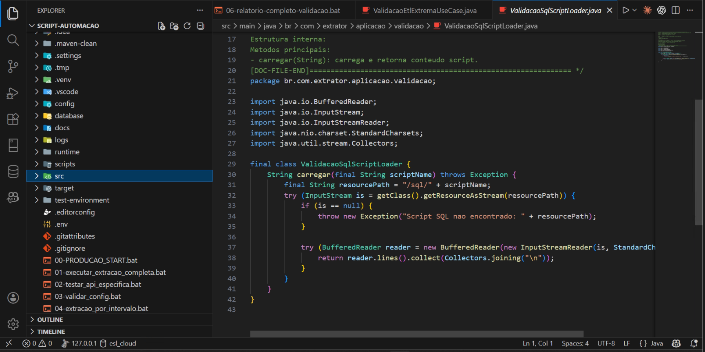
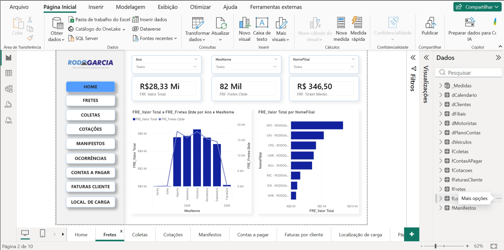

O que a imagem representa
- Execucao automatica de cliques e navegacao no ambiente operacional do TMS.
- Substituicao de uma rotina repetitiva e sujeita a variacao manual.
- Exemplo pratico da automacao que gerou ganho recorrente de tempo para a operacao.
Slide 1
Slide 2
Registro real da automacao executando a rotina que antes dependia de trabalho repetitivo no TMS.

Projeto equivalente: R$ 12-16 mil.
160 horas por mes voltaram para a equipe.
Slide 3
Slide 4
Slide 5
Captura do fluxo que passou a ser controlado e acompanhado automaticamente.

Menos de 1 dia no fluxo atual.
Entrega comparavel a R$ 9-13 mil.
Slide 6
Slide 7
A entrega saiu de um portal institucional inicial para uma base mais madura, pronta para CMS, novas secoes e manutencao mais previsivel.


Slide 8
Painel administrativo criado separadamente do portal publico para dar autonomia de gestao e abrir espaco para novas funcoes.

Faixa de R$ 10-22 mil.
Faixa de R$ 500-1.100 por mes.
Slide 9
Slide 10
Registro do codigo que estruturou a coleta, transformacao e consolidacao de dados internos.

Projeto comparavel a R$ 20-40 mil.
ETL como fundacao de dados para BI.
Slide 11
Slide 12
Painel conectado a base tratada para acompanhar indicadores e apoiar leitura operacional.

Faixa de R$ 3-5 mil.
5 usuarios Pro: R$ 225 por mes.
Slide 13
Slide 14